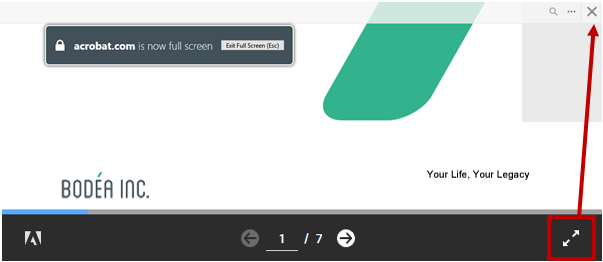
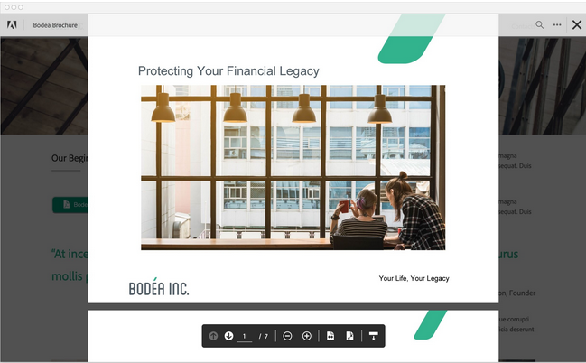

PDF Embed API basics¶
The samples and documentation provide an easy way to jump-start development. The sections below describe how to embed a customized PDF viewer in a web page.

Embed a PDF viewer¶
Once you’ve received your client ID, embedding the DC PDF viewer involves:
Adding a
<script>tag to load the PDF Embed API by source url: https://documentcloud.adobe.com/view-sdk/main.js (line 6).Setting up the rendering area: use a div tag with an ID of
adobe-dc-view(line 9).Initializing the PDF Embed API by passing client ID, and call
previewFilewith PDF file URL and file name as shown from line 13 to line 18.
As shown below, PDF details are passed in an object which consists of two fields:
content: The file content either provided as a file path or file promise which resolves to ArrayBuffer of the file content. See Passing file content.
metaData: File metadata information. Note that
fileNameis mandatory.
That’s it! View the page in a browser to see your fully functional PDF viewer.
1 2 3 4 5 6 7 8 9 10 11 12 13 14 15 16 17 18 19 20 21 22 23 | <html>
<head>
<title>Your title</title>
<meta charset="utf-8"/>
<meta http-equiv="X-UA-Compatible" content="IE=edge,chrome=1"/>
<script src="https://documentcloud.adobe.com/view-sdk/main.js"></script>
</head>
<body>
<div id="adobe-dc-view"></div>
<script type="text/javascript">
document.addEventListener("adobe_dc_view_sdk.ready", function()
{
var adobeDCView = new AdobeDC.View({clientId: "<YOUR_CLIENT_ID>", divId: "adobe-dc-view"});
adobeDCView.previewFile(
{
content: {location: {url: "(path to your PDF)/yourfilename.pdf"}},
metaData: {fileName: "yourfilename.pdf"}
});
});
</script>
</body>
</html>
<!--Get the samples from https://www.adobe.com/go/pdfembedapi_samples-->
|
Passing file content¶
As shown above, you pass PDF data via the content field either as a file URL or file promise. The metaData field with a mandatory filename is required for both methods.
adobeDCView.previewFile({
content: {location (URL) OR promise (File blob)},
metaData: {fileName (always required) + optional fields }
})
Tip
If you pass both a file URL and file promise, the promise is used and the URL value is ignored.
File URL¶
Passing PDF data via a URL is self-explanatory, but note that some scenarios require special handling.
Token-based authentication
When a file URL resides behind token-based authentication and use custom headers, pass both the URL and the headers as follows:
adobeDCView.previewFile({
content: {
location: {
url: <filepath>,
headers:[{key: ..., value: ...}, ...]
},
},
metaData: {fileName: <filename> }
})
Cookie-based authentication
When a file URL uses cookie-based authentication, set downloadWithCredentials to true when initialising the AdobeDC.View object:
var adobeDCView = new AdobeDC.View({
...
downloadWithCredentials: true,
});
Cross-origin resource sharing¶
Cross-origin resource sharing (CORS) issues may occur when you pass PDF content as a URL and the PDF Embed API needs to download the file from the provided location in order to render it. To avoid this situation, you can choose one of two methods:
Locate your webpage and file location URL on the same domain. Example: webpage: https://example.com/viewer/test.html; PDF location: https://example.com/resources/abc.pdf)
Enable CORS headers on the PDF resource to allow access from your webpage domain.
File promise¶
If the file content is available as an ArrayBuffer (for example, local PDF files), then it can be passed directly as a Promise which should resolve to the ArrayBuffer of the file content.
adobeDCView.previewFile({
content: { promise: <FILE_PROMISE> }
metaData: { fileName: <FILE_NAME> }
});
One way to create a file promise is to allow users to choose a local file for upload. In your HTML, you could do the following:
<label for="file-picker"> Choose a PDF file:</label>
<input type="file" id="file-picker" accept="application/pdf">
Once the file uploads, you could use a helper function to read the file and pass it to adobeDCView.previewFile:
function listenForFileUpload() {
var fileToRead = document.getElementById("file-picker");
fileToRead.addEventListener("change", function(event) {
var files = fileToRead.files;
if (files.length > 0) {
var reader = new FileReader();
reader.onloadend = function(e) {
var filePromise = Promise.resolve(e.target.result);
// Pass the filePromise and name of the file to the previewFile API
// adobeDCView.previewFile({
// content: {promise: filePromise}
// metaData: { fileName: files[0].name }
// })
};
reader.readAsArrayBuffer(files[0]);
}
}, false);
}
PDF Linearization¶
Linearization is an approach to optimize PDFs for faster viewing by displaying the first page as quickly as possible before the entire PDF gets downloaded. Linearized PDFs contain information so that pages can be streamed one at a time via byte range requests from a server. Linearization is extremely useful for displaying large-sized documents as well as displaying documents on slow networks, thus providing an overall faster PDF viewing experience.
PDF Embed API supports the rendering of linearized PDFs which are hosted on servers with byte-range support.
For details, see Enabling byte-streaming on a server.
Display linearized PDFs¶
In order to display linearized PDFs using PDF Embed API, set the variable enableLinearization to true (default value is false) and pass it as a preview configuration to the previewFile API.
As described in the section Passing file content, the linearized PDF can be passed as a file URL or file Promise.
File URL¶
Pass the URL of the linearized PDF in the content field and invoke the previewFile API.
<div id="adobe-dc-view"></div>
<script src="https://documentcloud.adobe.com/view-sdk/main.js"></script>
<script type="text/javascript">
document.addEventListener("adobe_dc_view_sdk.ready", function() {
var adobeDCView = new AdobeDC.View({clientId: "<YOUR_CLIENT_ID>", divId: "adobe-dc-view"});
var previewFilePromise = adobeDCView.previewFile({
content: {location: {url: "<URL_OF_LINEARIZED_PDF>"}},
metaData: {fileName: "<FILE_NAME>"}
},
{
enableLinearization: true,
});
});
</script>
File Promise¶
If the file content is available as an ArrayBuffer, then it can be passed directly as a Promise resolving to the ArrayBuffer of the file content.
Pass this file promise in the content field. Along with this, it is mandatory to pass an object called the linearizationInfo in the content field.
The linearizationInfo object will contain the following three functions:
getInfo()
Returns a Promise which,
Resolves with an object containing the file size. For instance, the size of a PDF file can be obtained by making a HEAD call to the PDF URL which will return the content length.
Reject the Promise if the content length is invalid and the PDF rendering automatically falls back to the non-linearized flow.
getInitialBuffer()
Returns a Promise which,
Resolves with an object containing the initial array buffer of the file. The initial buffer is defined as 0 - 1024 bytes which is required to render the first page of the linearized PDF.
Reject the Promise if this call fails due to an unexpected error and the PDF rendering automatically falls back to the non-linearized flow.
getFileBufferRanges()
Returns a Promise which,
Resolves with an object containing the list of desired array buffers of the file using the
rangesparameter provided by PDF Embed API at run time. Therangesparameter is an array ofstartandendfile ranges.
If the ranges array contains more than one object, then there are two ways to fetch the file buffers:
Make separate calls for each range object present in
rangesarray and return the combined result.Make a single call with Range header value set to comma separated start-end values for each range object (for example: “bytes=0-1024, 1024-2048”).
Reject the Promise when any range call fails or the range call returns the entire PDF buffer. In this case, PDF rendering will fall back to the non-linearized flow.
Note
If you pass both a file URL and file promise for a linearized PDF, the promise is used and the URL value is ignored.
If you use file promise, then it is mandatory to pass the
linearizationInfoobject. ThelinearizationInfoobject should contain all the 3 functions:getInfo(),getInitialBuffer()andgetFileBufferRanges().
Note that the website developer can provide their custom implementation of these functions and pass it to the linearizationInfo object.
<div id="adobe-dc-view"></div>
<script src="https://documentcloud.adobe.com/view-sdk/main.js"></script>
<script type="text/javascript">
document.addEventListener("adobe_dc_view_sdk.ready", function() {
const linearizationInfoObject = {
getInfo: () => getInfo(),
getInitialBuffer: () => getInitialBuffer(),
getFileBufferRanges: ranges => getFileBufferRanges(ranges)
};
var adobeDCView = new AdobeDC.View({clientId: "<YOUR_CLIENT_ID>", divId: "adobe-dc-view"});
var previewFilePromise = adobeDCView.previewFile({
content: {
promise: <FILE_PROMISE>,
linearizationInfo: linearizationInfoObject
},
metaData: {fileName: "<FILE_NAME>"}
},
{
enableLinearization: true,
});
function getInfo() {
/* Write down your own implementation here */
return new Promise((resolve, reject) => {
resolve({
fileSize: <FILE_SIZE>
});
});
}
function getInitialBuffer() {
/* Write down your own implementation here */
return new Promise((resolve, reject) => {
resolve({
buffer: <ARRAY_BUFFER>
});
});
}
function getFileBufferRanges(ranges) {
/* Write down your own implementation here */
/* Ranges parameter
ranges: [{ start: NUMBER, end: NUMBER}, { start: NUMBER, end: NUMBER}, . . .]
*/
return new Promise((resolve, reject) => {
resolve({
bufferList: [
<ARRAY_BUFFER>,
<ARRAY_BUFFER>,
. . .
]
});
});
}
});
</script>
Note
Find the working code sample here under /More Samples/Linearization
Supported browsers and platforms¶
Displaying linearized PDFs using PDF Embed API will work in browsers which support SharedArrayBuffer, such as Chrome and Chromium-based Microsoft Edge desktop browsers. In case of other desktop browsers and mobile browsers, it will automatically fall back to the normal behaviour (non-linearized flow) of downloading the entire PDF before file preview.
Other supported functionalities¶
Support for linearized PDF is currently available only in Full window embed mode. In all other embed modes, it will automatically fall back to the normal file rendering approach.
As the main focus here is to enable fast rendering of PDFs, certain functionalities which depend on the complete PDF buffer are not available immediately. These functionalities (for example, annotation tools and APIs, print and download PDF, document search, etc.) will be available once the PDF is fully downloaded and website developers will be notified through the PDF_VIEWER_READY event. To know more about this event, see the section Basic events under Analytics.
Enabling byte-streaming on a server¶
The server where the linearized PDFs are hosted should have support of byte-streaming and be able to send partial file content via HTTP 206 calls.
For example, you can follow these steps to enable byte-streaming in an Apache 2.4 server:
Open httpd.conf and make below changes:
1. Uncomment this line: LoadModule headers_module modules/mod_headers.so
2. In your respective <Directory>, set headers
<Directory "${SRVROOT}/htdocs/<__location_of_PDFs_____>">
<IfModule mod_headers.c>
# To allow byte-streaming and range support
Header set Access-Control-Allow-Headers "Range"
</IfModule>
</Directory>
Please see this article to know more about Access-Control-Allow-Headers.
Embed modes¶
The PDF Embed API’s embed modes govern the PDF viewing area’s size and position within a web page. Available options allow you to control the viewing experience and layout much like you would an image, video, or any other web content. In order to use any of the available modes, pass the mode name along with other preview configurations in the previewFile API. For example, you could set IN_LINE as the embedMode value (line 5):
adobeDCView.previewFile({
content: { ... },
metaData: { ... }
},
{embedMode: "<some value such as: IN_LINE">,
showDownloadPDF: ...,
showPrintPDF: ...
}
);
Tip
To view the code in action, see the online demo or run the embed mode samples on your machine.
Embed mode |
Description |
Example |
|---|---|---|
Full window (default mode) |
The viewing area renders in the full browser. Best suited for storage and productivity applications. |

|
The sized container mode displays PDFs in a boxed container with landscape orientation. Best suited for presentations. |

|
|
All PDF pages rendered in line within a web page. Best suited for reading applications. |

|
|
Displays PDFs in a focused view. Best suited for content websites, content portals, and email. |

|
Full window¶
The full window mode is the default embed mode and renders the PDF in the full browser. This mode is best suited for storage and productivity applications. (View Demo)
Tip
Note that the full window embed mode applies by default, and there is no need to pass any embedMode value. Configuring Menu and tool options is optional.
Commenting: By default, all commenting tools (add text comment, sticky notes, highlight, drawing tool, strikethrough and underline) along with the eraser tool are available with this mode. Users can add and save annotations to the PDF. If desired, disable commenting feature by setting the
showAnnotationToolsvariable to false.Print and download: This mode supports options to download and print the PDF (
showDownloadPDFandshowPrintPDF).Left-hand pane: The left-hand pane is available by default (
showLeftHandPanel) to display the page thumbnails, view existing bookmarks and access the file attachments available in the PDF.Page controls: Show or hide the page control options in the bottom toolbar, such as, zoom level, fit page, fit width, dock/undock page controls and navigation controls. (
showPageControlsanddockPageControls).View mode: Set the default page view to either fit page or fit width (
defaultViewMode).
<div id="adobe-dc-view"></div>
<script src="https://documentcloud.adobe.com/view-sdk/main.js"></script>
<script type="text/javascript">
document.addEventListener("adobe_dc_view_sdk.ready", function(){
var adobeDCView = new AdobeDC.View({clientId: "<YOUR_CLIENT_ID>", divId: "adobe-dc-view"});
adobeDCView.previewFile({
content:{location: {url: "https://documentcloud.adobe.com/view-sdk-demo/PDFs/Bodea Brochure.pdf"}},
metaData:{fileName: "Bodea Brochure.pdf"}
}, {});
});
</script>
Sized container¶
The sized container mode displays PDFs in a boxed container with landscape orientation. Each page appears as a slide, so this mode works well for presentations and other workflows that require accurate placement of the PDF content within other content. (View Demo)
To use this mode:
Specify the embedded viewer size by passing height and width values to the enclosing
divtag of the PDF viewer.Pass
embedMode: "SIZED_CONTAINER"Optional: Configure the page and tool options
Page controls: The page control toolbar with navigation options is docked but can be undocked by setting
dockPageControlsto false. A full screen mode button appears in the page control toolbar (showFullScreen).Print and download: This mode supports options to download and print the PDF (
showDownloadPDFandshowPrintPDF) as well as document search.
<div id="adobe-dc-view" style="height: 360px; width: 500px;"></div>
<script src="https://documentcloud.adobe.com/view-sdk/main.js"></script>
<script type="text/javascript">
document.addEventListener("adobe_dc_view_sdk.ready", function(){
var adobeDCView = new AdobeDC.View({clientId: "<YOUR_CLIENT_ID>", divId: "adobe-dc-view"});
adobeDCView.previewFile({
content:{location: {url: "https://documentcloud.adobe.com/view-sdk-demo/PDFs/Bodea Brochure.pdf"}},
metaData:{fileName: "Bodea Brochure.pdf"}
}, {embedMode: "SIZED_CONTAINER"});
});
</script>
Toggling full screen¶
To display the PDF in full screen view, choose the full screen mode button in the page toolbar. The top bar contains a traditional exit (X) button which returns full screen mode to normal mode. In mobile browsers, you can also exit full screen mode by swiping down.
In-Line¶
In-Line mode renders PDF pages inline with other web page content. In this mode, all PDF pages are displayed at once which enables easy and smooth navigation. In this mode you need only specify the width of the embedded viewer in the enclosing div tag since the viewer height is automatically sized for the number of PDF pages. This mode is ideal for whitepapers, brochures, e-books, and other reading applications. (View Demo)
To use this mode:
Specify the viewer width attribute in the enclosing
divtag of the PDF viewer.Pass
embedMode: "IN_LINE"Optional: By default, the page control toolbar only displays when a user scrolls pages. The toolbar displays basic navigation controls and document search along with options to download and print the PDF. You can toggle both
showDownloadPDFandshowPrintPDFon and off.
<div id="adobe-dc-view" style="width: 800px;"></div>
<script src="https://documentcloud.adobe.com/view-sdk/main.js"></script>
<script type="text/javascript">
document.addEventListener("adobe_dc_view_sdk.ready", function(){
var adobeDCView = new AdobeDC.View({clientId: "<YOUR_CLIENT_ID>", divId: "adobe-dc-view"});
adobeDCView.previewFile({
content:{location: {url: "https://documentcloud.adobe.com/view-sdk-demo/PDFs/Bodea Brochure.pdf"}},
metaData:{fileName: "Bodea Brochure.pdf"}
}, {embedMode: "IN_LINE"});
});
</script>
Lightbox¶
Lightbox mode renders the PDF in the foreground at top of the page. The background remains visible, but the focus is on the previewed PDF. This view mode also provides configurable Close and Back buttons in the top bar. The Close button appears by default. (View Demo)
To use this mode:
Pass
embedMode: "LIGHT_BOX".Optional: Configure the page, tool, and exit PDF Viewer options
Print and download: This mode supports options to download and print the PDF (
showDownloadPDFandshowPrintPDF).Page controls: Show or hide the page control options in the bottom toolbar, such as zoom level, fit page, fit width, dock/undock page controls, and navigation controls (
showPageControls).The page control toolbar is undocked by default but can be docked by settingdockPageControlsto true.View mode: Set the default page view to either fit page or fit width (
defaultViewMode).Exit PDF Viewer: The top bar contains the Close button by default to close the PDF preview which can be configured to Back button by setting
exitPDFViewerTypeto RETURN (exitPDFViewerType: "RETURN").
<script src="https://documentcloud.adobe.com/view-sdk/main.js"></script>
<script type="text/javascript">
document.addEventListener("adobe_dc_view_sdk.ready", function(){
var adobeDCView = new AdobeDC.View({clientId: "<YOUR_CLIENT_ID>"});
adobeDCView.previewFile({
content:{location: {url: "https://documentcloud.adobe.com/view-sdk-demo/PDFs/Bodea Brochure.pdf"}},
metaData:{fileName: "Bodea Brochure.pdf"}
}, {embedMode: "LIGHT_BOX"});
});
</script>
Top bar with Close button (default)
Top bar with Back button (exitPDFViewerType: "RETURN")
Language support¶
The PDF Embed API supports a number of languages. The default language is English (en-US), but you can select another language by passing the locale code variable when creating the AdobeDC.View object.
1 2 3 4 | var adobeDCView = new AdobeDC.View({
clientID: "<YOUR_CLIENT_ID>",
divId: "adobe-dc-view",
locale: "ja-JP",
|
Language |
Locale code |
|---|---|
Danish |
da-DK |
Dutch |
nl-NL |
English (United Kingdom) |
en-GB |
English (United States) |
en-US |
Finnish |
fi-FI |
French |
fr-FR |
German |
de-DE |
Italian |
it-IT |
Japanese |
ja-JP |
Norwegian |
nb-NO |
Portuguese |
pt-BR |
Spanish |
es-ES |
Swedish |
sv-SE |
Czech |
cs-CZ |
Korean |
ko-KR |
Polish |
pl-PL |
Russian |
ru-RU |
Turkish |
tr-TR |
Chinese |
zh-CN |
Chinese |
zh-TW |
Troubleshooting¶
Troubleshooting a web app and the PDF Embed API is straightforward web development. Use the tools you’re familiar with; for example, your IDE or Chrome Developer Tools.
Why is my URL value not used to access the PDF data?
If you pass both a file URL and file promise, the promise is used and the URL value is ignored.
Why do I see the error “Invalid client Id provided”?
Either your client ID is incorrect, or you are using it on a domain other than the one you registered.
Why does the file preview fail to load?
Cookies must be enabled in the browser for the file preview to load.